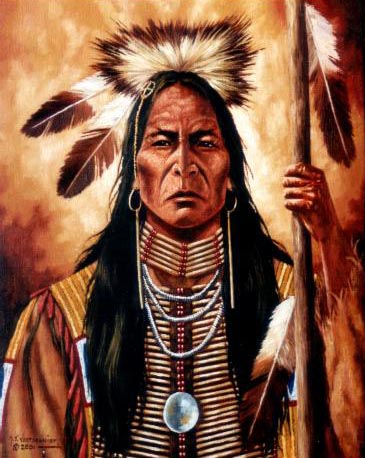
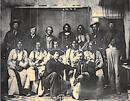
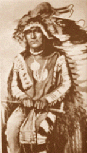

One summer in the year 1853, there was a young Cheyenne soldier named Tall
Bull.By 1864 this young soldier had grown to become one of the greatest Cheyenne leaders. He had become a well-acknowledged leader of the Dog Soldiers, the fiercest of the Cheyenne warrior societies. More than 100 lodges, or about 500 people followed him and the other chiefs over eastern Colorado and western Kansas and Nebraska.
Late that year the Sand Creek Massacre set off a war with the whites, the so-called Cheyenne-Arapaho War of 1864-65. Tall Bull, seeing the war’s futility, led his people north, away from the white men to the Powder River country. But within a year, homesickness had driven them back to the Republican and Smoke Hill River area.
In the spring of 1866, Tall Bull and his followers returned to a strange land. The buffalo were drifting out of the prime lands along the Smoky Hills, moving away from the advancing farms and railroads. Suffering depredations at the hands of white settlers and seeing the buffalo disappearing, the Dog Soldiers began a war once again. Through the winter and into the spring of 1867 they raided the central stage route, determined to drive the wagons and stations off the buffalo range.
Tall Bull was a major chief by that time. Professed his desire for a just peace, he stressed the need for the soldiers and whites to quit making war on the Indians.
Tall Bull was a major chief by that time. Professed his desire for a just peace, he stressed the need for the soldiers and whites to quit making war on the Indians.
His final statement indicated that what Barnitz took for defiance was probably impatience mixed with a little contempt: “I shall have no more to say to you there than here. I have said all I want to say.” Tall Bull maintained the peace by stopping the Dog Soldiers from attacking the troops as they approached their village and also by restraining the great warrior Roman Nose from killing Handcock during a council.
Traveling north through eastern Colorado Territory, Tall Bull led his people towards the Republican again trying to find the bands that had not gone south for the winter. While Tall Bull’s people camped near Beaver Creek, the 5th Cavalry, under Major Eugene Carr, attacked them. A long, tiring fight ensured over many miles and with many skirmishes. The village lost many provisions and lodges. In retaliation, Tall Bull led his warriors to the Smoky Hill, where they killed, looted, burned and kidnapped when he had started his anger and his need for provisions, he retreated once again into the rough and isolated country between the Republican and the Platte determined to take his people north once again, as he had in 1865, to five free with their northern relatives.

The only known photograph of chief Black Kettle
As Black Kettle rode across the wind blown prairie of eastern Colorado, his
expression revealed the concern and worry of the elder Indian chief. In the
crispy autumn air of 1864, Black Kettle As Black Kettle rode across the wind
blown prairie of eastern Colorado, his expression revealed the concern and
worry of the elder Indian chief. In the crispy autumn air of 1864, Black
Kettle reflected on the bloody summer, which had witnessed terror and murder
across the plains. Roving bands of young Cheyenne and Arapaho warriors had
raided eastern Colorado and western Kansas, causing alarm and rage with the
white settlers. Finally, Territorial Governor, John Evans called for a military
militia to end the Indian problem. Governor Evans ordered all Cheyenne’s
and Arapaho Indians to lay down their arms, release their hostages and return
to the lands set forth in the Treaty of 1861. reflected on the
bloody summer, which had witnessed terror and murder across the plains. Roving
bands of young Cheyenne and Arapaho warriors had raided eastern Colorado and
western Kansas, causing alarm and rage with the white settlers. Finally, Territorial
Governor, John Evans called for a military militia to end the Indian problem.
Governor Evans ordered all Cheyenne’s and Arapaho Indians to lay down their
arms, release their hostages and return to the lands set forth in the Treaty
of 1861. The only known photograph of chief Black Kettle
He knew from experience this new militia would set out on a full-scale war and would not relent, even to the peace-seeking Black Kettle and his Cheyenne people. Among the Indian tribes of the plains, Black Kettle was widely respected as a fierce adversary of the Pawnee and Kiowa, yet he believed in peace with the whites.
In 1861 he had signed the peace treaty at Fort Wise, promising to remain in the vicinity, of the Arkansas River and not to interfere with the emigrants along the Smoky Hill Trail. In 1863,he and Lean Bear had traveled to Washington, D.C. to see the “Great White Father,” President Abraham Lincoln, It quite possibly could have been during this visit that Black Kettle realized the great magnitude of the white population and realized that all-out warfare with the white man would mean the annihilation of his own people.
For the next three days, Black Kettle’s people were not only facing a surge of miners, also an increasing number of homesteaders on the plains as promoter, William N. Byers and his Rocky Mountain News helped to bring agricultural development to the Colorado Territory. The young Cheyenne warriors refused to obey the Treaty of Fort Wise and launched raids among the white people, running off livestock, disabling mail routes and destroying freight carriers, causing major supply shortages in Denver and elsewhere.
Black Kettle responded to the governor’s demands at Fort Lyon, Major Scott J. Anthony instructed Black Kettle to move his people to Sand Creek, some 40 miles from the fort. Anthony told Black Kettle his people would be safe and the game would be plentiful. Anthony even presented a white flag to Black Kettle, a sign of his intentions to protect the Indians.
Later that week, Chivington, Governor Evans, and Major Anthony planed an attack on Black Kettle and his people. The attack came at dawn. “Take no prisoners,” Chivington ordered; adding his own slogan, “nits make lice.” The attack lasted over 8 hours, becoming one of the worst acts of savagery that exists in records of Colorado history. Black Kettle escape across the prairie along with 500 others. Black Kettle immediately flew the flags given to him by Major Anthony. Black Kettle took his wife and ran. He later extracted the bullets, and his wife lived. “All Cheyenne chiefs, Black Kettle, White Antelope, Little Robe, Left Hand, Knock Knee, and One Eye were killed. In 1867 he signed the Treaty of Medicine Lodge. Promising peace, the Indians gave up their land along the Arkansas River, in exchange receiving land on the Indian Reservation in today’s Oklahoma. The army and the government did not keep promises with the Indians as you can clearly see here.
On the Washita, the Cheyenne hope of peace and independence died along with their people. Black Kettle the man, the Indian Chief, the advocate of peace, died at the hands of those he trusted, sought peace with, and believed in.
“All we ask is that we have peace with the whites. We want to hold you by the hand. You are our father. We have been travelling through a cloud. The sky has been dark ever since the war began. These braves who are with me are willing to do what I say. We want to take good tidings home to our people, that they may sleep in peace. I want you to give all these chiefs of the soldiers here to understand that we are for peace, and that we have made peace, that we may not be mistaken by them for enemies. I have not come here with a little wolf bark, but have come to talk plain with you.” Black Kettle speaking to Governor Evans, Coronal Chivington, Major Wynkoop and others in Denver, autumn, 1864.
When Black Kettle went back to government he said, “although the troops have struck us, we throw it all behind and are glad to meet you in peace and friendship. What have you come here for and what the President has sent you for, I don’t object to, but say yes to it … the white people can go wherever they please and they will not be disturbed by us, and I want you to let them know … We are different nations, but it seems as if we were but one people, whites and all… Again, I take you by the hand and I feel happy. These people that are with us are glad to think that we can have peace once more, and can sleep soundly, and that we can live.” Black Kettle October 1865.
“We were once friends with the whites but you nudged us out of the way by your intrigues, and now when we are in council you keep nudging each other. Why don’t you talk, and go straight, and let all be well?” Black Kettle at Medicine Creek Lodge, October 1867. Black Kettle was a negotiator, an out spoken person and speaks his mind.

Over a hundred years ago there was a Cheyenne war chief that the whites called
Roman Nose. He had fierce-proud face of a Hawk, and his deeds were legendary.
He always rode into battle with a long, flowing war bonnet trailing behind
him, It was filled with Eagle feathers, and each one stood for a brave deed
or coup (scalp) he had counted on his enemies.While Dull Knife was noted in warfare among Indians, Roman Nose made his record against the whites, in defense of territory embracing the Republican and Arickaree rivers. He was killed on the later river in 1868, in the celebrated battle with General Forsythe.